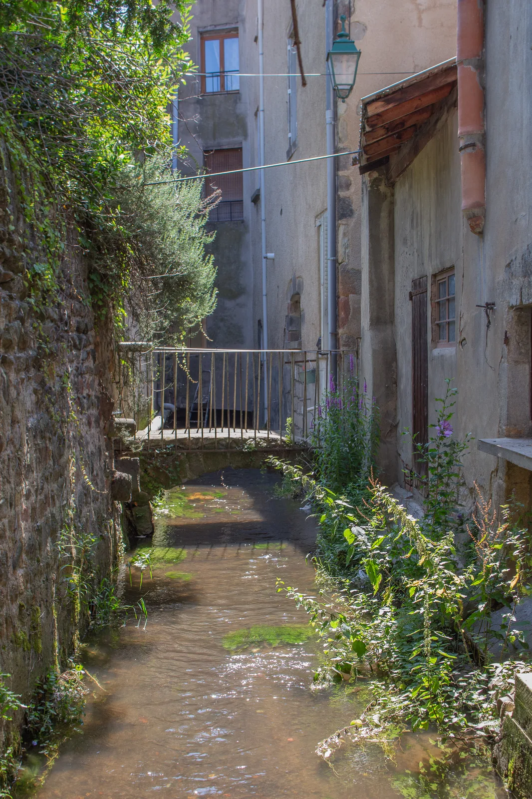

🌿 Livret d'accueil · Issoire, Puy-de-Dôme
Bienvenue au Triozon
3 boulevard Triozon Bayle · 63500 Issoire · 1er étage
🌿 Livret d'accueil · Issoire, Puy-de-Dôme
3 boulevard Triozon Bayle · 63500 Issoire · 1er étage
Un mot de votre hôte
J'espère que vous y passerez un séjour agréable et ressourçant, et que vous profiterez de notre belle région. N'hésitez pas à m'appeler si il vous manquait quoi que ce soit ou pour un conseil sur la région !
Sidonie 🌿 · 06 64 51 32 45
Code et clés communiqués avant votre arrivée
Vous y trouverez le badge d'accès à l'immeuble et les clés de l'appartement. L'appartement se trouve au 1er étage.
La plupart des places sont gratuites dans le quartier
On trouve facilement des places — avec un peu de chance, même au pied de l'immeuble !
À commander à l'avance si besoin
Les draps et serviettes ne sont pas inclus par défaut. Vous pouvez apporter les vôtres, ou me les commander à l'avance :
Tout ce que vous trouverez sur place
Fourni à votre arrivée :
L'appartement est équipé d'une chaudière à gaz à eau chaude, située dans la cuisine. Les radiateurs sont munis de robinets thermostatiques — tournez simplement pour régler la température souhaitée pièce par pièce. Si l'eau n'est pas assez chaude, vous pouvez la régler directement sur la chaudière.
En sortant de l'immeuble, traversez la rue vers la gauche : vous trouverez les conteneurs tout-venant et recyclage.
Quelques petites choses avant de repartir
Un forfait ménage de 30 € est disponible à la réservation. Si vous faites le ménage vous-même, merci de laisser le logement parfaitement propre, prêt à être reloué. Dans tous les cas :
Issoire et l'Auvergne ont beaucoup à offrir !

Chaque vendredi soir en juillet-août : concerts, spectacles de rue et marchés nocturnes autour de l'abbatiale illuminée !



Méconnus mais fascinants, les biefs d'Issoire forment un réseau de canaux historiques qui parcourt la ville souterrainement et en surface.
📄 Télécharger la brochure (PDF)Si vous avez des remarques ou des suggestions, je suis toujours ouverte aux retours. Beau séjour ! 🌿
En cas de besoin, vous n'êtes jamais loin d'une aide